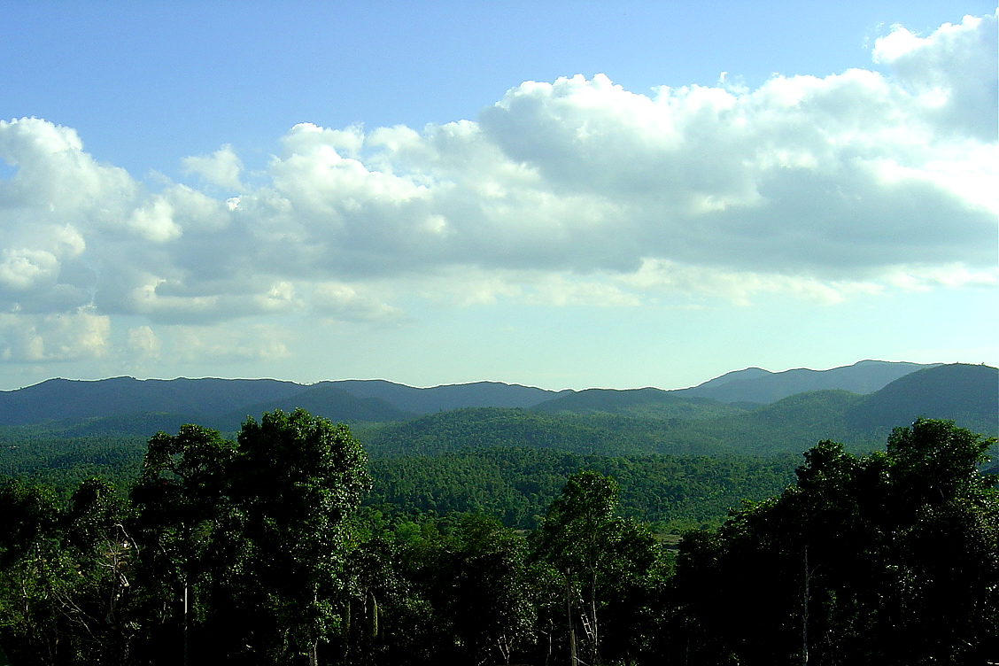

-
India
Coffee growing has a long history that is attributed first to Ethiopia and then to Arabia (Yemen). The earliest history is traced to 875 AD according to the Bibliotheque Nationale in Paris, and the original source to Ethiopia (Abyssinia) from where it was brought to Arabia in the 15th century.[7]
In the Indian context, coffee growing started with an Indian Muslim saint, Baba Budan,[2][8] who, while returning from a pilgrimage to Mecca, smuggled seven coffee beans (by hiding them in his beard) from Yemen to Mysore in India.[7] He planted them on the Chandra Drona Giri (1,829 metres (6,001 ft))('Giri' means "hill") in Chikkamagaluru district. It was considered an illegal act to take out green coffee seed out of Arabia. As number seven is a sacrosanct number in Islamic religion, the saint's act of carrying seven coffee beans was considered a religious act.[6] This was the beginning of coffee industry in India, and in particular, in the then state of Mysore, now part of the Karnataka State. This was an achievement of considerable bravery of Baba Budan considering the fact that Arabs had exercised strict control over its export to other countries by not permitting coffee beans to be exported in any form other than as in a roasted or boiled form to prevent germination.[9]
 Systematic cultivation soon followed Baba Budan's first planting of the seeds, in 1670, mostly by private native Indian owners and the first plantation was established in 1840 around Baba Budan Giri and its surrounding hills in Karnataka. It spread to other areas of Wayanad (now part of Kerala), the Shevaroys and Nilgiris in Tamil Nadu. With British colonial presence taking strong roots in India in the mid 19th century, coffee plantations flourished for export. The culture of coffee thus spread to South India rapidly.
Initially, Arabica was popular. However, as result of serious infestation caused to this species by coffee rust, an alternative robust species of coffee, appropriately named as robusta and another hybrid between liberica and Arabica, a rust-tolerant hybrid variety of Arabica tree became popular. This is the most common variety of coffee that is grown in the country with Karnataka alone accounting for 70% of production of this variety.[8][9]
In 1942, the government decided to regulate the export of coffee and protect the small and marginal farmers by passing the Coffee VII Act of 1942, under which the Coffee Board of India got established, operated by the Ministry of Commerce and Industry.[2] The government dramatically increased their control of coffee exports in India and pooled the coffees of its growers. In doing so, they reduced the incentives for farmers to produce high-quality coffee, so quality became stagnant.[2]
Over the last 50 years, coffee production in India has grown by over 15 percent.[10] From 1991, economic liberalisation took place in India, and the industry took full advantage of this and cheaper labour costs of production.[11] In 1993, a monumental Internal Sales Quota (ISQ) made the first step in liberalising the coffee industry by entitling coffee farmers to sell 30% of their production within India.[2] This was further amended in 1994 when the Free Sale Quota (FSQ) permitted large and small scale growers to sell between 70% and 100% of their coffee either domestically or internationally.[2] A final amendment in September 1996 saw the liberalisation of coffee for all growers in the country and a freedom to sell their produce wherever they wished.[2]